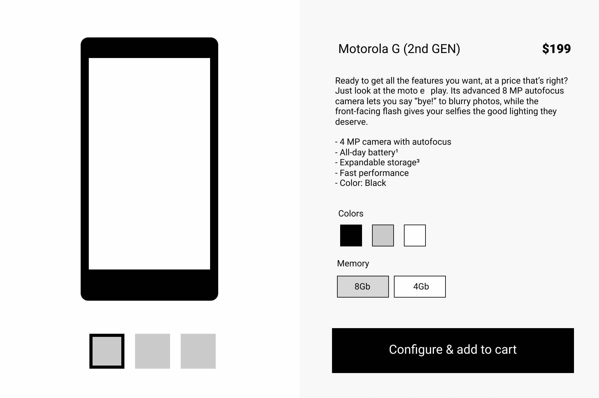
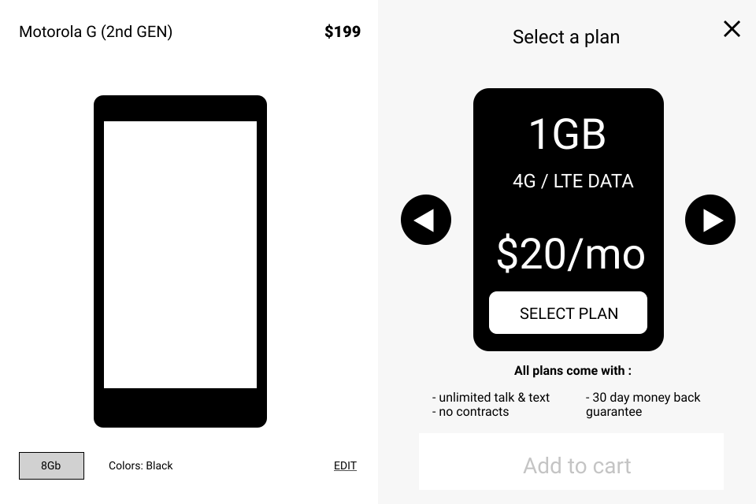
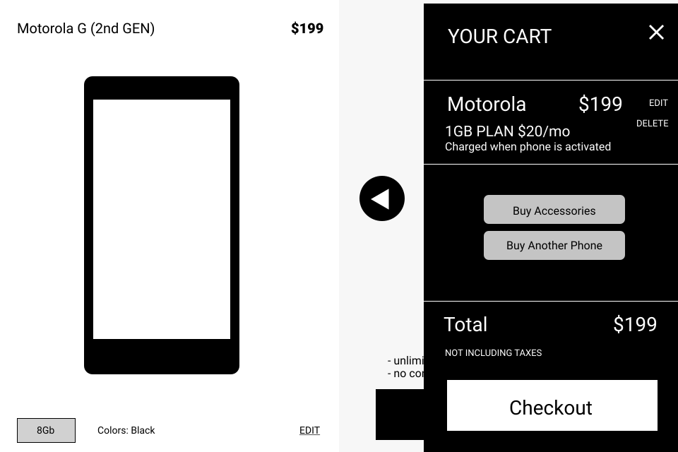

The challenge with buying a phone is that there is most likely a plan that will also need to be purchased. So not only did we need to educate users about their phones, we also needed to quickly educate them about the plans available and help them select one.
- Only make a user focus on one choice at a time
- Quickly allow the user to explore and try things
- Make the module flexible enough to work with any phone while keeping the UI familiar
User experience strategy, stakeholder interviews, competitive analysis, system diagrams, wireframes, UI design, prototyping, usability testing.

We needed to create a module that could serve two purposes: allow the user to configure their phone and select a plan for it.
- The experience had to work for single phones and multiple phones purchased at once
- We needed to communicate better about which stage of the buying process users were in
- Users wanted to undo any selection at any time without having to restart the buy flow

We wanted users to seamlessly transition between configuring their phone and selecting a plan for it.
- Only make a user focus on one choice at a time
- Quickly allow the user to explore and try different plans
- Allow a user to proceed without needing to authenticate first

The cart had to carry a lot of weight in this flow. We wanted to make it as easy as possible for users to purchase while also encouraging accessory sales, which were significantly more profitable than the phones themselves.
- Users wanted to edit their order directly in the cart
- Users did not know how to add a second phone until we added an explicit button in the cart
- Users wanted to see shipping cost visible in the cart
